审美进入日常 / 个人化界面系统 ↗
我每天都要打开这些 AI 工具，希望它们不只是能用，也有自己喜欢的颜色、角色和细节。
我的审美最终要落在使用里，而不是停在一张效果图上。
我会用 AI 做产品，也会拿它处理自己的阅读、写作和工作。这里放的，是那些我做完第一版以后还在继续改的东西。
我把它们分成三条路线，方便你挑自己感兴趣的看。每一页都写我当时为什么做、哪一步卡住、后来怎么改。能确认的写确认，没确认的就写没确认。
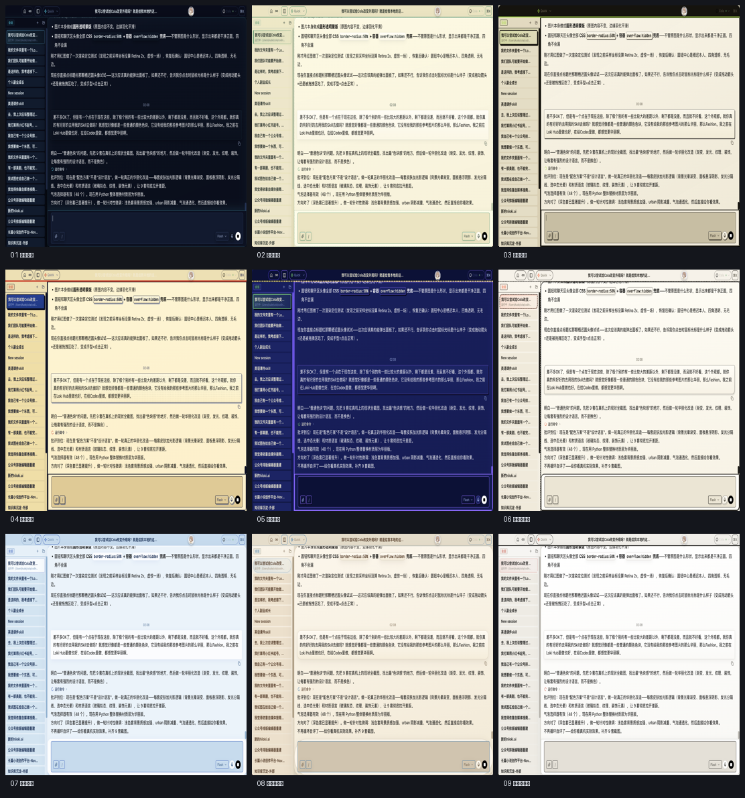
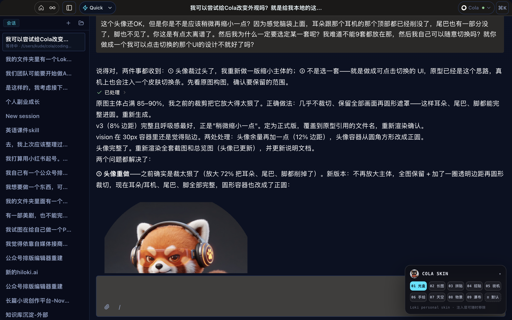
我天天都要打开 Cola、Codex 这些工具，就想把它们改成自己喜欢的样子。颜色换完才发现，菜单、弹窗、输入区也得跟着改，关掉重开还不能给我变回去。

从喜欢一个人的表达，到研究一个角色怎样做选择。我把公开材料与原作分开整理，保留 13 个人物档案，也继续做禾晏、雁回、顾声的角色视角研究；原著和剧版各有自己的证据与缺口。
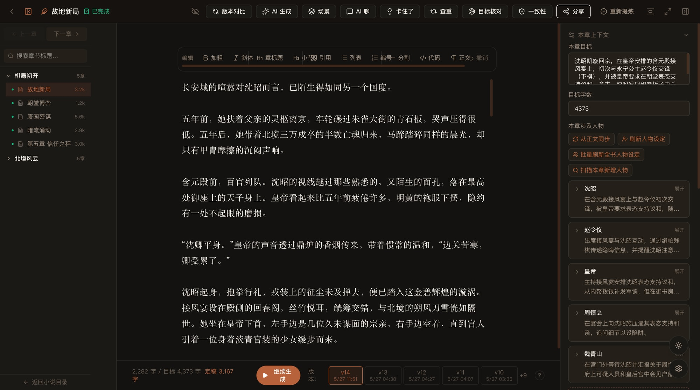
我用 AI 写长篇，最烦写到后面把前面忘了，人物受过的伤、埋过的伏笔又得我提醒。所以我把正文、人物和前情放在一起，接着写之前，先把该记得的找回来。
这里放两个每天会回来的东西。每日洞见帮我记住读书时真正卡住我的问题；Health 把饮水、饮食和身体目标放回同一个入口。一个用了 AI，一个没有把 AI 当主角，公开页都只写目前能确认的部分。
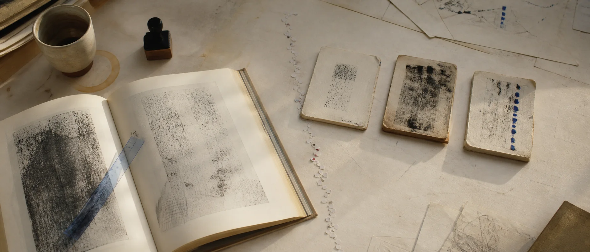
我让 Cola 每天拆一本书，但光给我几句金句肯定不够。我想先知道它讲了什么，再看看跟我有什么关系。现在已经存了 28 篇，最新的是《禅与摩托车维修艺术》。
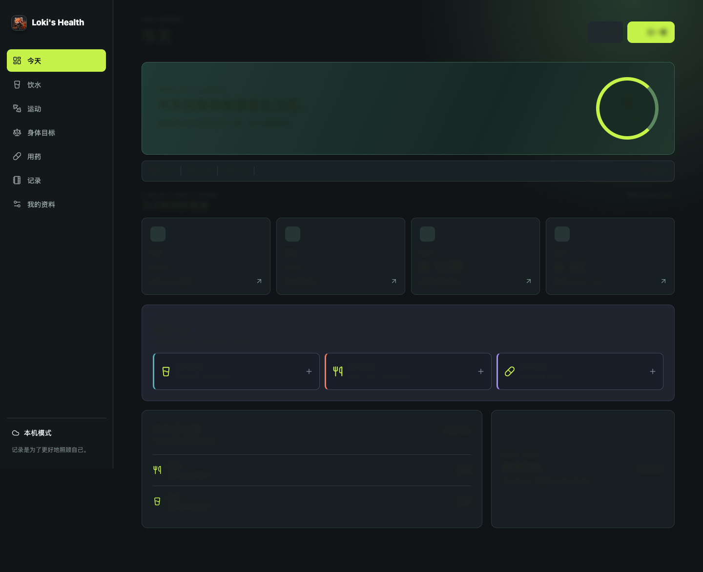
睡眠、运动在 Apple 健康里，吃了什么、喝了多少水、药有没有忘，又得去别处找。我想把这些放到一起，记录先存在自己的设备上，哪天想回头看也能找得到。
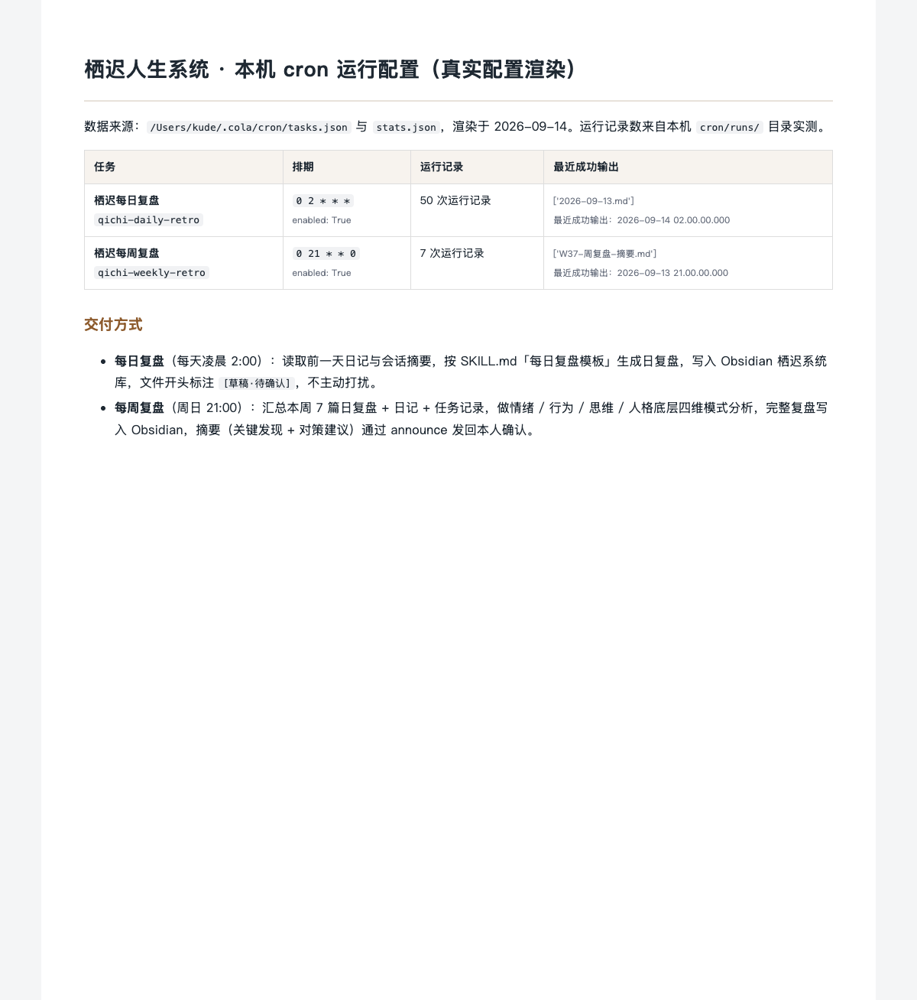
我跟 AI 聊得挺多，但它要是一直顺着我、一直哄，我聊完也没解决什么。后来就把情绪、行为、思维、人格分开，让它每天回头看我的记录，把反复出现的问题写进 Obsidian。
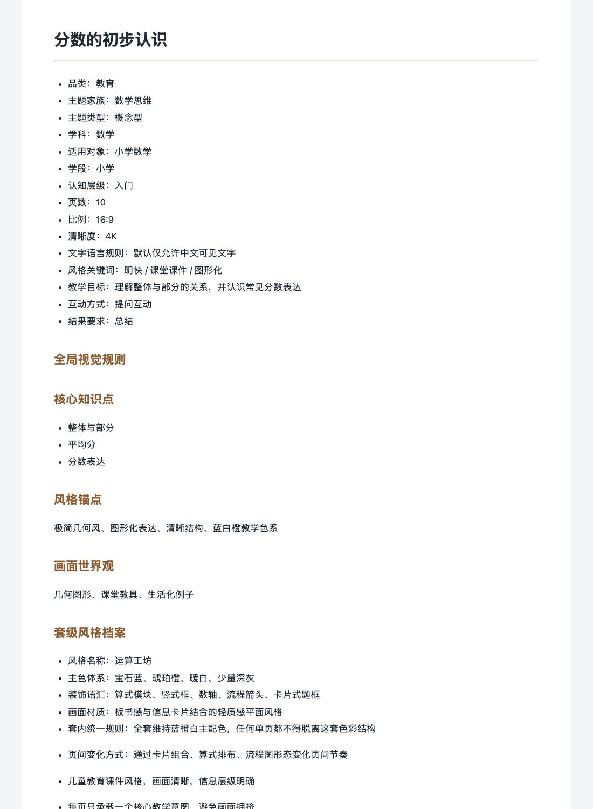
从语文换到数学，不能只换主题名。我把教学目标、页面骨架和视觉规则分开，用《分数的初步认识》的十页提示词说明怎么迁移。
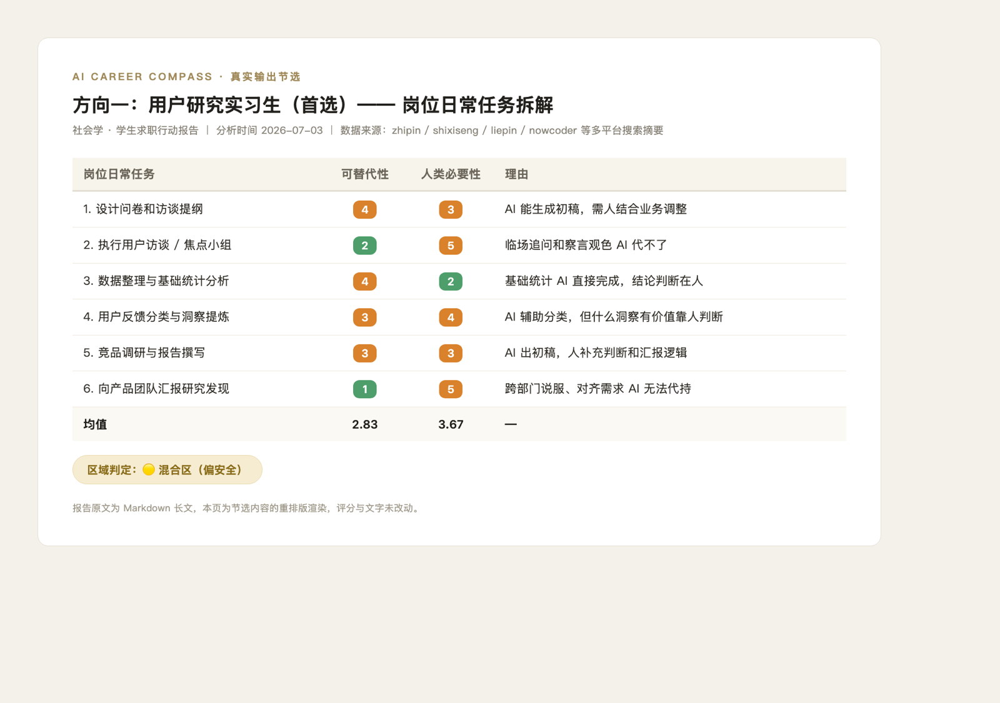
我招人的时候看简历，很多人写得都差不多，套个模板也看不出他做过什么。我就想做个工具，把岗位要求和手上的经历拆开看，最后落到简历怎么改、接下来七天能做什么。
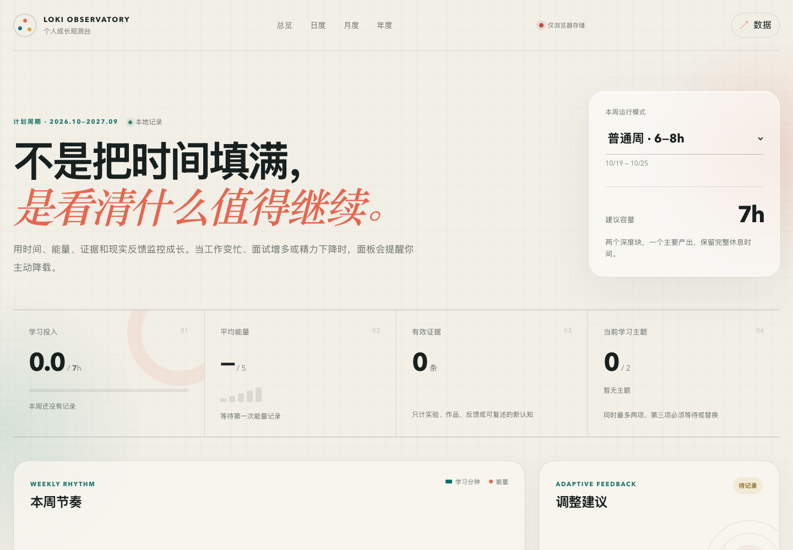
计划排得再满，也得看这周还有多少精力。我做了一个成长观测台，把投入、状态和留下的证据放在一起。忙的时候少做一点，休假时也不用追着进度跑。
电子书转换器就是这样来的。我保留 Calibre 的转换能力，把命令行藏起来，只留下拖入文件、选格式、看进度和打开结果。
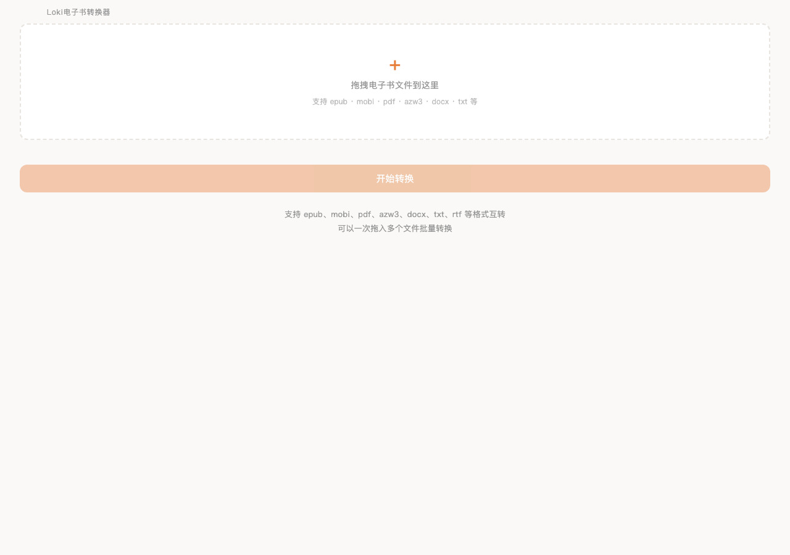
我就想给电子书换个格式，每次还得重新熟悉 Calibre 那个界面。干脆给它做个壳，拖进去、选格式、等它转完，常用的几步放在面前就够了。
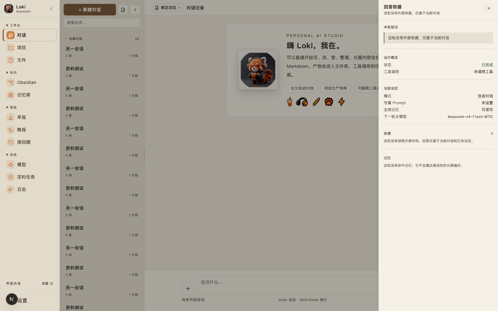
Cola 记得我，Codex 也记得我，可它们怎么记、记了什么，我不一定看得清。所以我给自己做了雾尼，接上 Obsidian，能找笔记、能看记忆，也能看它到底调了哪些工具。
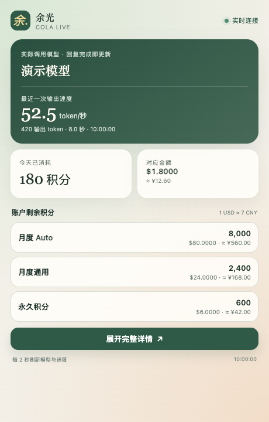
我想随时知道 Cola 这次用了什么模型、回复有多快，就把余光做成常驻桌面的小窗。Cola 开了它跟着出现，退出后收起；需要细看时，在同一个窗口展开完整记录。
【恋之上上签】单独放在这里。它从私人喜欢开始，也逼着我认真决定歌词能用到哪里、AI 可以做什么、哪些判断必须留在自己手里。
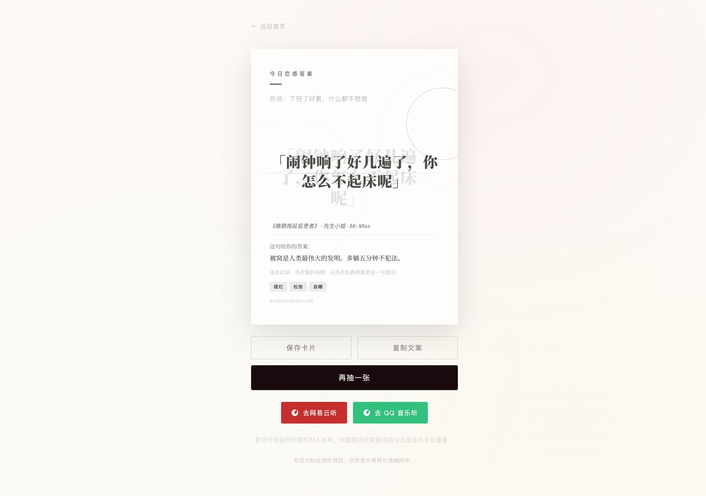
我喜欢刘恋，也喜欢她的词，就想让更多人看到。答案之书大家都知道嘛，我做了个歌词版，从 44 首歌里挑了 147 条短句，写下心情就能抽一张。
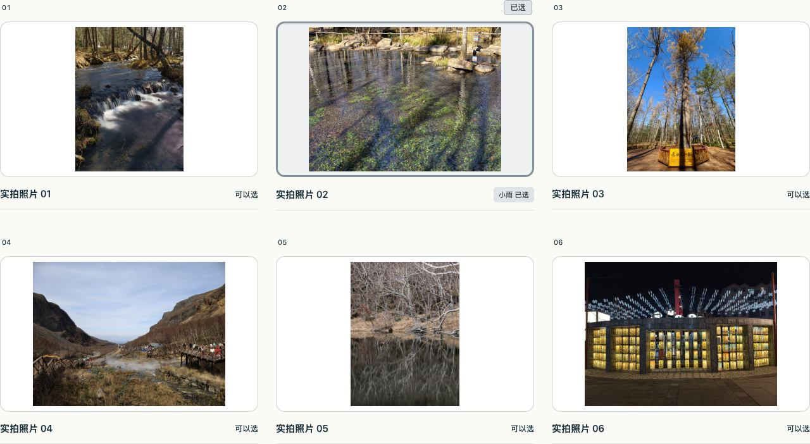
旅行回来带了一堆小礼物，发到不同的群里让朋友圈图，最后还得自己核对有没有选重。我做了张礼物桌，大家直接进去挑，想公开署名还是悄悄收下，都可以。
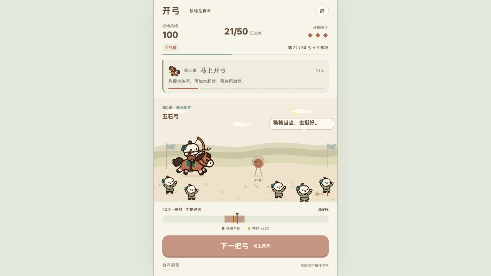
按住拉弓，松手出箭。一个小动作，往里放移动靶、骑射、观众反应和过关反馈，就有了越玩越想再试一箭的校场。我还在继续打磨它。
三条创作主线
我是赛博小熊猫 Loki，一个用 AI 做产品、做内容的创作者。从自己的喜欢和使用中的麻烦出发，把想法做成能用的东西，再把制作方法留下来。
我每天都要打开这些 AI 工具，希望它们不只是能用，也有自己喜欢的颜色、角色和细节。
我的审美最终要落在使用里，而不是停在一张效果图上。
有些人的访谈和作品，我会反复看。除了喜欢她怎么说，我还想知道她遇到问题时先看什么。
喜欢是起点，回到材料、验证判断，是我继续做下去的方式。
我用 AI 写长篇时，最烦写到后面忘了前面：人物受过的伤、埋过的伏笔，总要再提醒。
我从自己真的遇到的问题开始，用 AI 做出能继续使用和修改的产品。